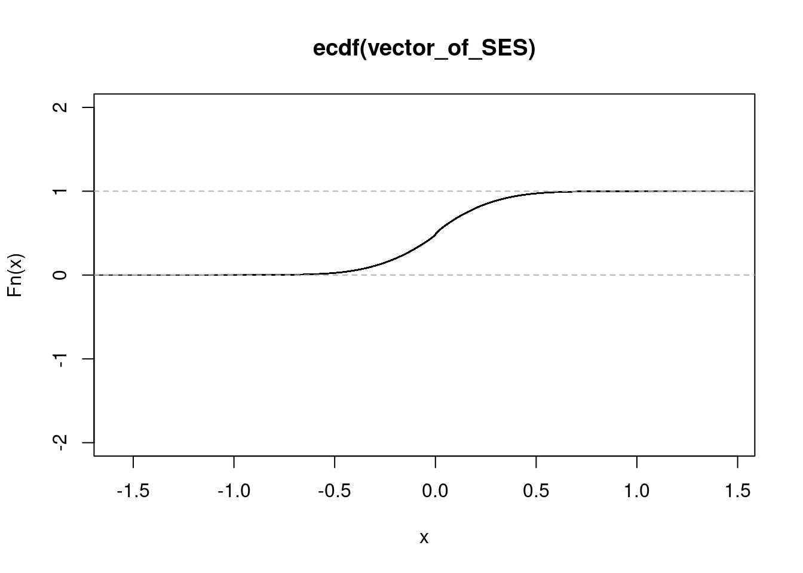
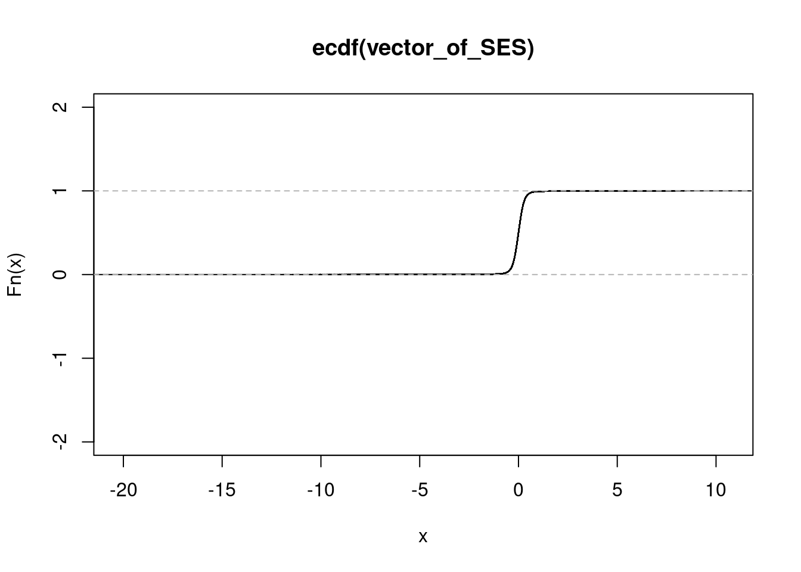
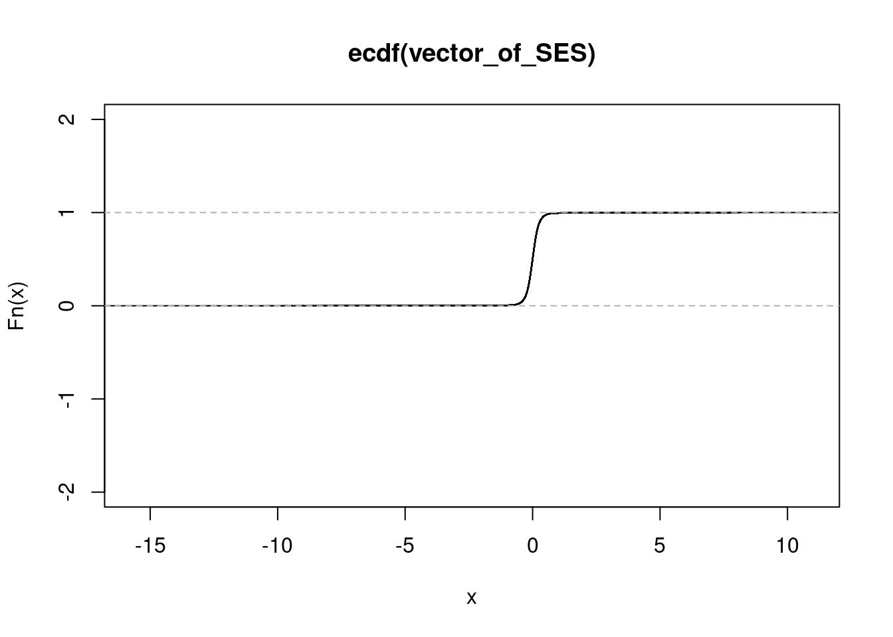
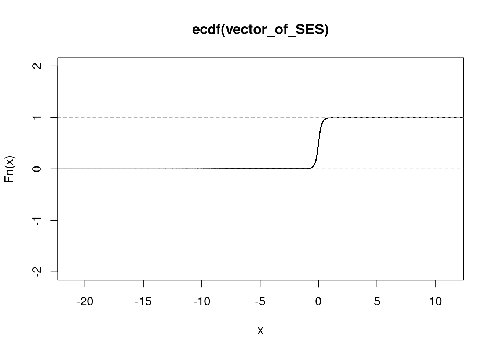
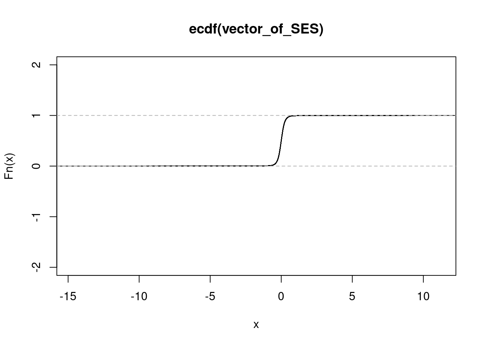
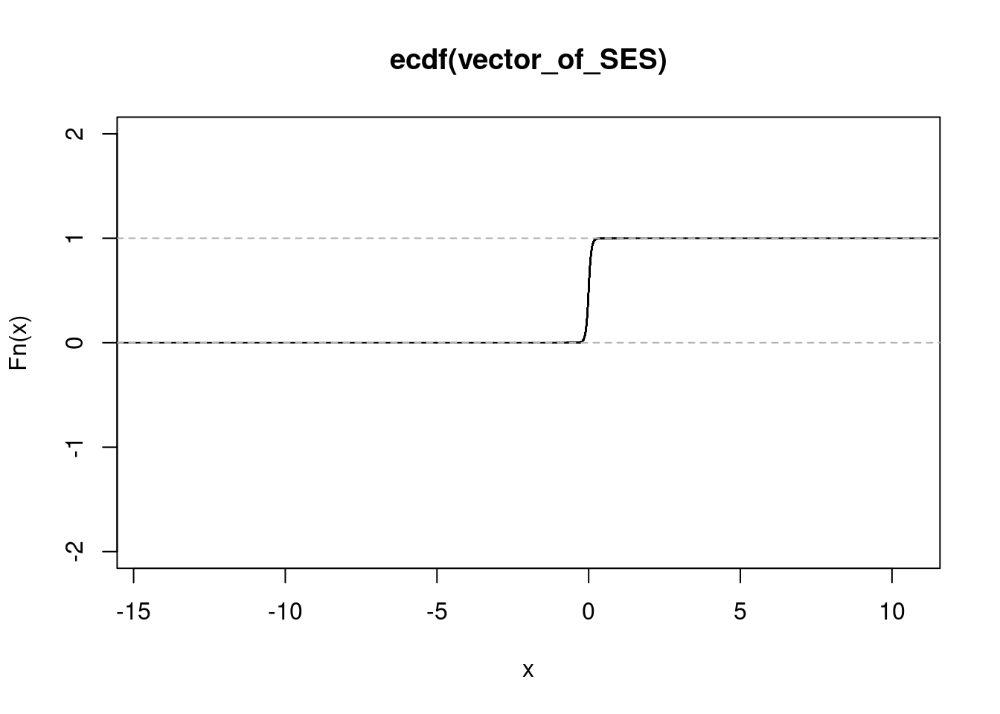
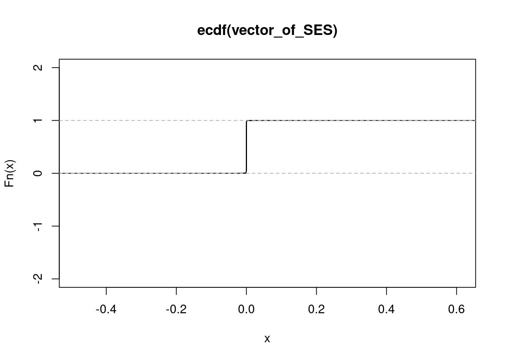
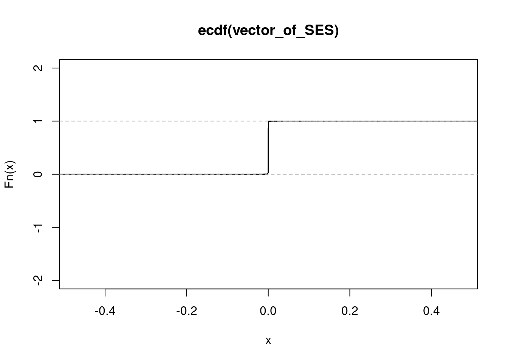

Conducting power analysis for eQTL mapping
Anthony Hung
2021-01-19
Last updated: 2021-11-12
Checks: 7 0
Knit directory: invitroOA_pilot_repository/
This reproducible R Markdown analysis was created with workflowr (version 1.6.2). The Checks tab describes the reproducibility checks that were applied when the results were created. The Past versions tab lists the development history.
Great! Since the R Markdown file has been committed to the Git repository, you know the exact version of the code that produced these results.
Great job! The global environment was empty. Objects defined in the global environment can affect the analysis in your R Markdown file in unknown ways. For reproduciblity it’s best to always run the code in an empty environment.
The command set.seed(20210119) was run prior to running the code in the R Markdown file. Setting a seed ensures that any results that rely on randomness, e.g. subsampling or permutations, are reproducible.
Great job! Recording the operating system, R version, and package versions is critical for reproducibility.
Nice! There were no cached chunks for this analysis, so you can be confident that you successfully produced the results during this run.
Great job! Using relative paths to the files within your workflowr project makes it easier to run your code on other machines.
Great! You are using Git for version control. Tracking code development and connecting the code version to the results is critical for reproducibility.
The results in this page were generated with repository version 3962af3. See the Past versions tab to see a history of the changes made to the R Markdown and HTML files.
Note that you need to be careful to ensure that all relevant files for the analysis have been committed to Git prior to generating the results (you can use wflow_publish or wflow_git_commit). workflowr only checks the R Markdown file, but you know if there are other scripts or data files that it depends on. Below is the status of the Git repository when the results were generated:
Ignored files:
Ignored: .DS_Store
Ignored: .Rhistory
Ignored: .Rproj.user/
Ignored: code/.DS_Store
Ignored: code/bulkRNA_preprocessing/.snakemake/conda-archive/
Ignored: code/bulkRNA_preprocessing/.snakemake/conda/
Ignored: code/bulkRNA_preprocessing/.snakemake/locks/
Ignored: code/bulkRNA_preprocessing/.snakemake/shadow/
Ignored: code/bulkRNA_preprocessing/.snakemake/singularity/
Ignored: code/bulkRNA_preprocessing/.snakemake/tmp.3ekfs3n5/
Ignored: code/bulkRNA_preprocessing/fastq/
Ignored: code/bulkRNA_preprocessing/out/
Ignored: code/single_cell_preprocessing/.snakemake/conda-archive/
Ignored: code/single_cell_preprocessing/.snakemake/conda/
Ignored: code/single_cell_preprocessing/.snakemake/locks/
Ignored: code/single_cell_preprocessing/.snakemake/shadow/
Ignored: code/single_cell_preprocessing/.snakemake/singularity/
Ignored: code/single_cell_preprocessing/YG-AH-2S-ANT-1_S1_L008/
Ignored: code/single_cell_preprocessing/YG-AH-2S-ANT-2_S2_L008/
Ignored: code/single_cell_preprocessing/demuxlet/.DS_Store
Ignored: code/single_cell_preprocessing/fastq/
Ignored: data/external_scRNA/Chou_et_al2020/
Ignored: data/external_scRNA/Jietal2018/
Ignored: data/external_scRNA/Wuetal2021/
Ignored: data/external_scRNA/merged_external_scRNA.rds
Ignored: data/poweranalysis/alasoo_et_al/
Ignored: output/GO_terms_enriched.csv
Ignored: output/topicModel_k=6.rds
Ignored: output/topicModel_k=7.rds
Ignored: output/topicModel_k=8.rds
Ignored: output/voom_results.rds
Untracked files:
Untracked: data/Homo_sapiens_Bgee_14_2/
Untracked: data/anatdata.RData
Untracked: data/release.tsv
Untracked: data/species_Bgee_14_2.tsv
Unstaged changes:
Modified: .gitignore
Modified: analysis/DEanalysis_bulkRNA.Rmd
Note that any generated files, e.g. HTML, png, CSS, etc., are not included in this status report because it is ok for generated content to have uncommitted changes.
These are the previous versions of the repository in which changes were made to the R Markdown (analysis/powerAnalysis.Rmd) and HTML (docs/powerAnalysis.html) files. If you’ve configured a remote Git repository (see ?wflow_git_remote), click on the hyperlinks in the table below to view the files as they were in that past version.
| File | Version | Author | Date | Message |
|---|---|---|---|---|
| html | d22555c | Anthony Hung | 2021-01-23 | knit analysis files |
| Rmd | 77338dc | Anthony Hung | 2021-01-21 | knit analysis files |
| Rmd | 78cfbcd | Anthony Hung | 2021-01-21 | finish paring down files |
| Rmd | cd95c28 | Anthony Hung | 2021-01-21 | add caliskan data |
| Rmd | e3fbd0f | Anthony Hung | 2021-01-21 | add ward et al data files to data |
| Rmd | 98724f0 | Anthony Hung | 2021-01-21 | finish topic model rmd |
| Rmd | 28f57fa | Anthony Hung | 2021-01-19 | Add files for analysis |
Introduction
Here, we plot power curves under the assumptions of different sample sizes for an eQTL study. We also look at eQTL effect sizes from previously published response-eQTL studies to contextualize the power curves.
Power Curve derivations based on Abhishek Sarkar’s calculations: https://users.rcc.uchicago.edu/~aksarkar/hypoxia/reqtl.html
Load libraries
library(ggplot2)
library(dplyr)
Attaching package: 'dplyr'The following objects are masked from 'package:stats':
filter, lagThe following objects are masked from 'package:base':
intersect, setdiff, setequal, unionlibrary(tidyverse)── Attaching packages ────────────────────────────────── tidyverse 1.3.0 ──✓ tibble 3.0.4 ✓ purrr 0.3.4
✓ tidyr 1.1.2 ✓ stringr 1.4.0
✓ readr 1.3.1 ✓ forcats 0.4.0── Conflicts ───────────────────────────────────── tidyverse_conflicts() ──
x dplyr::filter() masks stats::filter()
x dplyr::lag() masks stats::lag()library(ashr)Plot a power curve
First, we need to specify the heritability for our model.
heritability <- 0.16 # median cis-heritability based on Gusev et al. 2016, Wheeler et al. 2016
lambda <- sqrt(heritability / (1-heritability))Next, we make the plot for sample sizes ranging from 3 to 100. Here, vertical lines representing the average .99 quantile cdf eQTL effect sizes across conditions in each of the three external studies analyzed below are also plotted.
colors <- cbPalette <- c("#999999", "#E69F00", "#56B4E9", "#009E73", "#F0E442", "#0072B2", "#D55E00", "#CC79A7")
samp_size <- c(3, 10, 20, 40, 58, 100) # sample sizes for power curve
alpha <- 5e-6 #for FWER of 0.05 and a list of 10000 genes, we have an adjusted alpha (based on bonferroni correction) of 5e-6
power_function <- function(x, n){
pnorm(qnorm(alpha/2) + x * sqrt(n))
}
#The False positive rate for calling an eQTL discovered in one condition (out of two total condition) as a condition specific eQTL (a.k.a. a "response eQTL") is computed by this function.
FPR_function <- function(x, n){
1 - pnorm(qnorm(alpha/2) + x * sqrt(n))
}
p <- ggplot(data.frame(x = c(0, 2)), aes(x = x)) +
stat_function(fun = power_function, args = list(n = 3),
aes(colour = "3", linetype = "Power"), size = 1.5) +
stat_function(fun = FPR_function, args = list(n = 3),
aes(colour = "3", linetype = "dynamic QTL FPR"), size = 1, alpha = 0.7) +
stat_function(fun = power_function, args = list(n = 10),
aes(colour = "10", linetype = "Power"), size = 1.5) +
stat_function(fun = FPR_function, args = list(n = 10),
aes(colour = "10", linetype = "dynamic QTL FPR"), size = 1, alpha = 0.7) +
stat_function(fun = power_function, args = list(n = 30),
aes(colour = "30", linetype = "Power"), size = 1.5) +
stat_function(fun = FPR_function, args = list(n = 30),
aes(colour = "30", linetype = "dynamic QTL FPR"), size = 1, alpha = 0.7) +
stat_function(fun = power_function, args = list(n = 58),
aes(colour = "58", linetype = "Power"), size = 1.5) +
stat_function(fun = FPR_function, args = list(n = 58),
aes(colour = "58", linetype = "dynamic QTL FPR"), size = 1, alpha = 0.7) +
stat_function(fun = power_function, args = list(n = 100),
aes(colour = "100", linetype = "Power"), size = 1.5) +
stat_function(fun = FPR_function, args = list(n = 100),
aes(colour = "100", linetype = "dynamic QTL FPR"), size = 1, alpha = 0.7) +
# annotate("rect", xmin = 0.25340626, xmax = 0.2652244, ymin = -Inf, ymax = Inf, alpha = .2, fill = "blue") +
annotate("segment", x = 0.2593153, xend = 0.2593153, y = -Inf, yend = Inf, alpha = 0.3, color = "blue", size = 1) +
# annotate("rect", xmin = 0.7232331, xmax = 0.8596644, ymin = -Inf, ymax = Inf, alpha = .2, fill = "purple") +
annotate("segment", x = 0.793114125, xend = 0.793114125, y = -Inf, yend = Inf, alpha = 0.3, color = "purple", size = 1) +
#annotate("rect", xmin = 0.6035850, xmax = 0.6097121, ymin = -Inf, ymax = Inf, alpha = .2, fill = "brown") +
annotate("segment", x = 0.605953025, xend = 0.605953025, y = -Inf, yend = Inf, alpha = 0.3, color = "brown", size = 1) +
# stat_function(fun = function(x) x^2/(1+x^2),
# aes(colour = "heritability"), size = 1, alpha = 0.5) +
scale_x_continuous(name = "Standardized Effect Size",
limits=c(0, 2)) +
scale_y_continuous(name = "Power",
limits = c(0,1)) +
ggtitle("eQTL Power Curves") +
scale_colour_manual("Sample Size", breaks = c("3", "10", "30", "58", "100"), values = colors) +
scale_linetype_manual("Curve Type", breaks = c("Power", "dynamic QTL FPR"), values = c("dynamic QTL FPR" = "dotted", "Power" = "solid")) +
theme_bw() +
geom_hline(yintercept = .8, linetype = "dashed", color = "red")
p
| Version | Author | Date |
|---|---|---|
| d22555c | Anthony Hung | 2021-01-23 |
Import outside data on eQTLs to see distributions of standardized effect sizes
After plotting our power curve, we would like to get a sense of the range of standardized effect sizes in several previously published response-eQTL papers.
#This function creates an empirical cdf from a vector of effect sizes and prints out several quantiles of the ecdf
get_ecdf <- function(vector_of_SES){
SES_ecdf <- ecdf(vector_of_SES)
print(quantile(SES_ecdf, c(.75, .95, .99)))
print(plot(SES_ecdf, ylim = c(-2,2)))
}Ward et al hypoxia response eQTL study
#michelle hypoxia reQTL study
conditionA <- as_tibble(read.table('data/poweranalysis/ward_et_al_2020/A-adjust.txt.gz', fill = TRUE, stringsAsFactors = FALSE))
conditionB <- as_tibble(read.table('data/poweranalysis/ward_et_al_2020/B-adjust.txt.gz', fill = TRUE, stringsAsFactors = FALSE))
conditionC <- as_tibble(read.table('data/poweranalysis/ward_et_al_2020/C-adjust.txt.gz', fill = TRUE, stringsAsFactors = FALSE))
conditionD <- as_tibble(read.table('data/poweranalysis/ward_et_al_2020/D-adjust.txt.gz', fill = TRUE, stringsAsFactors = FALSE))
zz <- gzfile('data/poweranalysis/ward_et_al_2020/reqtls.txt.gz','rt')
hypoxia <- as_tibble(read.table(zz, fill = TRUE, stringsAsFactors = FALSE))
names(hypoxia) <- hypoxia %>%
dplyr::slice(1) %>%
unlist()
hypoxia <- hypoxia %>%
dplyr::slice(-1)
## find SNP-gene pairs that were tested in all conditions and compute allelic effect sizes
common <- sort(Reduce(intersect, list(paste0(conditionA$TEST.SNP.CHROM, conditionA$TEST.SNP.POS, " ", conditionA$PHENO),
paste0(conditionB$TEST.SNP.CHROM, conditionB$TEST.SNP.POS, " ", conditionB$PHENO),
paste0(conditionC$TEST.SNP.CHROM, conditionC$TEST.SNP.POS, " ", conditionC$PHENO),
paste0(conditionD$TEST.SNP.CHROM, conditionD$TEST.SNP.POS, " ", conditionD$PHENO)
)))
length(common)[1] 1040874conditionA <- conditionA %>%
dplyr::mutate(temp = paste0(TEST.SNP.CHROM, TEST.SNP.POS, " ", PHENO)) %>%
dplyr::filter(temp %in% common) %>%
dplyr::mutate(slope = log(ALPHA/BETA))%>%
dplyr::mutate(zscore = sign(ALPHA - BETA) * sqrt(qchisq(p = p_adjusted + 1e-30, df = 1))) %>%
dplyr::select(-temp)
conditionB <- conditionB %>%
dplyr::mutate(temp = paste0(TEST.SNP.CHROM, TEST.SNP.POS, " ", PHENO)) %>%
dplyr::filter(temp %in% common) %>%
dplyr::mutate(slope = log(ALPHA/BETA))%>%
dplyr::mutate(zscore = sign(ALPHA - BETA) * sqrt(qchisq(p = p_adjusted + 1e-30, df = 1))) %>%
dplyr::select(-temp)
conditionC <- conditionC %>%
dplyr::mutate(temp = paste0(TEST.SNP.CHROM, TEST.SNP.POS, " ", PHENO)) %>%
dplyr::filter(temp %in% common) %>%
dplyr::mutate(slope = log(ALPHA/BETA))%>%
dplyr::mutate(zscore = sign(ALPHA - BETA) * sqrt(qchisq(p = p_adjusted + 1e-30, df = 1))) %>%
dplyr::select(-temp)
conditionD <- conditionD %>%
dplyr::mutate(temp = paste0(TEST.SNP.CHROM, TEST.SNP.POS, " ", PHENO)) %>%
dplyr::filter(temp %in% common) %>%
dplyr::mutate(slope = log(ALPHA/BETA))%>%
dplyr::mutate(zscore = sign(ALPHA - BETA) * sqrt(qchisq(p = p_adjusted + 1e-30, df = 1))) %>%
dplyr::select(-temp)
dim(conditionA)[1] 1040874 22dim(conditionB)[1] 1040874 22dim(conditionC)[1] 1040874 22dim(conditionD)[1] 1040874 22# For each condiiton in the study, compute the empirical CDF and quantiles after obtaining the effect sizes by dividing the zscore by the sqrt of the number of individuals in the study (15).
#conditionA
get_ecdf(conditionA$zscore/sqrt(15)) 75% 95% 99%
0.1552778 0.4150685 0.6053753 
| Version | Author | Date |
|---|---|---|
| d22555c | Anthony Hung | 2021-01-23 |
NULL#conditionB
get_ecdf(conditionB$zscore/sqrt(15)) 75% 95% 99%
0.1572876 0.4167222 0.6051397 
| Version | Author | Date |
|---|---|---|
| d22555c | Anthony Hung | 2021-01-23 |
NULL#conditionC
get_ecdf(conditionC$zscore/sqrt(15)) 75% 95% 99%
0.1564676 0.4154604 0.6035850 
| Version | Author | Date |
|---|---|---|
| d22555c | Anthony Hung | 2021-01-23 |
NULL#conditionD
get_ecdf(conditionD$zscore/sqrt(15)) 75% 95% 99%
0.1582968 0.4196211 0.6097121 
| Version | Author | Date |
|---|---|---|
| d22555c | Anthony Hung | 2021-01-23 |
NULLAlasoo et al 2019 IFN gamma and salmonella reQTL study
https://www.ncbi.nlm.nih.gov/pmc/articles/PMC6548559/#FN5 data on Zenodo: https://zenodo.org/record/1158560
Run the following chunk to download the data to the repository.
cd data/poweranalysis/alasoo_et_al/
#load in data from eQTL analysis downloaded using wget from zenodo
wget https://zenodo.org/record/1158560/files/RNA_FastQTL_SL1344_500kb_pvalues.sorted.txt.gz
wget https://zenodo.org/record/1158560/files/RNA_FastQTL_naive_500kb_pvalues.sorted.txt.gz
wget https://zenodo.org/record/1158560/files/RNA_FastQTL_IFNg_SL1344_500kb_pvalues.sorted.txt.gz
wget https://zenodo.org/record/1158560/files/RNA_FastQTL_IFNg_500kb_pvalues.sorted.txt.gz # load data into R
n_sorted <- as_tibble(read.table("data/poweranalysis/alasoo_et_al/RNA_FastQTL_naive_500kb_pvalues.sorted.txt.gz"))
sal_sorted <- as_tibble(read.table("data/poweranalysis/alasoo_et_al/RNA_FastQTL_SL1344_500kb_pvalues.sorted.txt.gz"))
IFN_sorted <- as_tibble(read.table("data/poweranalysis/alasoo_et_al/RNA_FastQTL_IFNg_500kb_pvalues.sorted.txt.gz"))
salIFN_sorted <- as_tibble(read.table("data/poweranalysis/alasoo_et_al/RNA_FastQTL_IFNg_SL1344_500kb_pvalues.sorted.txt.gz"))
#for sorted data,
#V1 = gene
#V2 = chromosome
#V3 = location of SNP
#V4 = SNP
#V5 = distance to gene from SNP?
#V6 = p-value
#v7 = slope of regression
#We can use the p-value to obtain the zscore (pvalue -> Zscore)
#then use slopes and zscores to obtain SE (slope/zscore = SE)
n_sorted <- n_sorted %>%
dplyr::filter(V6 != 1) %>%
dplyr::mutate(zscore = if_else(V7 < 0, true = qnorm(V6/2), false = qnorm(1-V6/2))) %>%
dplyr::mutate(SE = V7/zscore)
sal_sorted <- sal_sorted %>%
dplyr::filter(V6 != 1) %>%
dplyr::mutate(zscore = if_else(V7 < 0, true = qnorm(V6/2), false = qnorm(1-V6/2))) %>%
dplyr::mutate(SE = V7/zscore)
IFN_sorted <- IFN_sorted %>%
dplyr::filter(V6 != 1) %>%
dplyr::mutate(zscore = if_else(V7 < 0, true = qnorm(V6/2), false = qnorm(1-V6/2))) %>%
dplyr::mutate(SE = V7/zscore)
salIFN_sorted <- salIFN_sorted %>%
dplyr::filter(V6 != 1) %>%
dplyr::mutate(zscore = if_else(V7 < 0, true = qnorm(V6/2), false = qnorm(1-V6/2))) %>%
dplyr::mutate(SE = V7/zscore)
# use ashr to estimate true effect sizes from the data in order to compute SES
n_sorted_ash_out <- ash(betahat = n_sorted$V7, sebetahat = n_sorted$SE, df = 84)
sal_sorted_ash_out <- ash(betahat = sal_sorted$V7, sebetahat = sal_sorted$SE, df = 84)
IFN_sorted_ash_out <- ash(betahat = IFN_sorted$V7, sebetahat = IFN_sorted$SE, df = 84)
salIFN_sorted_ash_out <- ash(betahat = salIFN_sorted$V7, sebetahat = salIFN_sorted$SE, df = 84)
#add columns to datasets corresponding to the SES computed from ash betas and sds
n_sorted$SES <- n_sorted_ash_out$result$PosteriorMean/n_sorted_ash_out$result$PosteriorSD
sal_sorted$SES <- sal_sorted_ash_out$result$PosteriorMean/sal_sorted_ash_out$result$PosteriorSD
IFN_sorted$SES <- IFN_sorted_ash_out$result$PosteriorMean/IFN_sorted_ash_out$result$PosteriorSD
salIFN_sorted$SES <- salIFN_sorted_ash_out$result$PosteriorMean/salIFN_sorted_ash_out$result$PosteriorSD
#Run the ecdf function separately on each of the different conditions
#naive
get_ecdf(n_sorted$SES) 75% 95% 99%
0.1606588 0.4507322 0.8475118 
| Version | Author | Date |
|---|---|---|
| d22555c | Anthony Hung | 2021-01-23 |
NULLget_ecdf(n_sorted_ash_out$result$PosteriorMean) 75% 95% 99%
0.002599666 0.010322366 0.042398086 
| Version | Author | Date |
|---|---|---|
| d22555c | Anthony Hung | 2021-01-23 |
NULL#salmonella condition
get_ecdf(sal_sorted$SES) 75% 95% 99%
0.1341273 0.3958948 0.7232331 
| Version | Author | Date |
|---|---|---|
| d22555c | Anthony Hung | 2021-01-23 |
NULL#IFN treated condition
get_ecdf(IFN_sorted$SES) 75% 95% 99%
0.1537379 0.4549502 0.8596644 
| Version | Author | Date |
|---|---|---|
| d22555c | Anthony Hung | 2021-01-23 |
NULL#salmonella and ifn treated condition
get_ecdf(salIFN_sorted$SES) 75% 95% 99%
0.1370046 0.4083029 0.7420472 
| Version | Author | Date |
|---|---|---|
| d22555c | Anthony Hung | 2021-01-23 |
NULLCaliskan et al 2015 Rhinovirus reQTL study
https://www.ncbi.nlm.nih.gov/pmc/articles/PMC4395341/
Data output from MatrixeQTL kindly provided by Dr. Minal Caliskan.
rhinovirus_data <- as.tibble(read.table("data/poweranalysis/caliskan_et_al/eQTL_results_cis_response.txt.gz",
sep = "\t",
header = TRUE))Warning: `as.tibble()` is deprecated as of tibble 2.0.0.
Please use `as_tibble()` instead.
The signature and semantics have changed, see `?as_tibble`.
This warning is displayed once every 8 hours.
Call `lifecycle::last_warnings()` to see where this warning was generated.#obtain standard errors by using beta and t.stat
rhinovirus_data <- rhinovirus_data %>%
dplyr::mutate(se = beta/t.stat)
#add column to denote which condition the association comes from; separate into two datasets
rhinovirus_data <- rhinovirus_data %>%
mutate(condition = ifelse(grepl("_f", SNP), "f", "r"))
rhinovirus_data_f <- rhinovirus_data %>%
dplyr::filter(condition == "f")
rhinovirus_data_r <- rhinovirus_data %>%
dplyr::filter(condition == "r")
# use ashr to estimate true effect sizes from the data in order to compute SES (separately for each half of the data)
rhinovirus_f_ashr_out <- ash(betahat = rhinovirus_data_f$beta, sebetahat = rhinovirus_data_f$se, df = 96)
rhinovirus_r_ashr_out <- ash(betahat = rhinovirus_data_r$beta, sebetahat = rhinovirus_data_r$se, df = 96)
#add column for SES (based on ash output)
rhinovirus_data_f$SES <- rhinovirus_f_ashr_out$result$PosteriorMean/rhinovirus_f_ashr_out$result$PosteriorSD
rhinovirus_data_r$SES <- rhinovirus_r_ashr_out$result$PosteriorMean/rhinovirus_r_ashr_out$result$PosteriorSD
#Run the ecdf function separately on each of the different conditions
#uninfected
get_ecdf(rhinovirus_data_f$SES) 75% 95% 99%
0.0486464 0.1414978 0.2271107 
| Version | Author | Date |
|---|---|---|
| d22555c | Anthony Hung | 2021-01-23 |
NULLget_ecdf(rhinovirus_f_ashr_out$result$PosteriorMean) 75% 95% 99%
0.0001144159 0.0003825204 0.0007927461 
| Version | Author | Date |
|---|---|---|
| d22555c | Anthony Hung | 2021-01-23 |
NULL#rhinovirus
get_ecdf(rhinovirus_data_r$SES) 75% 95% 99%
0.0540109 0.1631119 0.2652244 
| Version | Author | Date |
|---|---|---|
| d22555c | Anthony Hung | 2021-01-23 |
NULLget_ecdf(rhinovirus_r_ashr_out$result$PosteriorMean) 75% 95% 99%
0.0001393432 0.0004605828 0.0009016914 
| Version | Author | Date |
|---|---|---|
| d22555c | Anthony Hung | 2021-01-23 |
NULLNumber of genes meeting the SES threshold
For the supplementary table, we are interested in the number of eQTLs that meet the SES threshold in each study for each sample size.
# Compute the SES thresholds for 80% power at each sample size
alpha <- 5e-6 #for FWER of 0.05 (assuming 10,000 genes)
#for Power = 0.8, what is the Standardized effect size?
#n = 100
n100_ses_threshold <- (qnorm(.8) - qnorm(alpha/2))/sqrt(100)
#n = 58
n58_ses_threshold <- (qnorm(.8) - qnorm(alpha/2))/sqrt(58)
#n = 30
n30_ses_threshold <- (qnorm(.8) - qnorm(alpha/2))/sqrt(30)
#n = 10
n10_ses_threshold <- (qnorm(.8) - qnorm(alpha/2))/sqrt(10)
#Ward et al study
# See how many genes have at least one test that meets each of the 3 SES thresholds determined above in each condition.
n_egenes_ward <- matrix(NA, nrow = 4, ncol = 4)
colnames(n_egenes_ward) <- c("n=100", "n=58", "n=30", "n=10")
rownames(n_egenes_ward) <- c("conditionA", "conditionB", "conditionC", "conditionD")
i <- 1
for(condition in list(conditionA, conditionB, conditionC, conditionD)){
j <- 1
for(threshold in c(n100_ses_threshold, n58_ses_threshold, n30_ses_threshold, n10_ses_threshold)){
n_egenes_ward[i,j] <- length(unique(condition %>% dplyr::filter(zscore/sqrt(15) > threshold | zscore/sqrt(15) < -threshold) %>% pull(PHENO)))
j <- j + 1
}
i <- i + 1
}
#Alasoo et al study
# See how many genes have at least one test that meets each of the 3 SES thresholds determined above in each condition.
alpha <- 0.05/15786 #for FWER of 0.05 (assuming 15786 genes)
#for Power = 0.8, what is the SES?
#n = 100
n100_ses_threshold <- (qnorm(.8) - qnorm(alpha/2))/sqrt(100)
#n = 58
n58_ses_threshold <- (qnorm(.8) - qnorm(alpha/2))/sqrt(58)
#n = 30
n30_ses_threshold <- (qnorm(.8) - qnorm(alpha/2))/sqrt(30)
#n = 10
n10_ses_threshold <- (qnorm(.8) - qnorm(alpha/2))/sqrt(10)
n_egenes_alasoo <- matrix(NA, nrow = 4, ncol = 4)
colnames(n_egenes_alasoo) <- c("n=100", "n=58", "n=30", "n=10")
rownames(n_egenes_alasoo) <- c("naive", "IFN", "salmonella", "IFN + salmonella")
i <- 1
for(condition in list(n_sorted, IFN_sorted, sal_sorted, salIFN_sorted)){
j <- 1
for(threshold in c(n100_ses_threshold, n58_ses_threshold, n30_ses_threshold, n10_ses_threshold)){
n_egenes_alasoo[i,j] <- length(unique(condition %>% dplyr::filter(SES > threshold | SES < -threshold) %>% pull(V1)))
j <- j + 1
}
i <- i + 1
}
#Caliskan et al study
# See how many genes have at least one test that meets each of the 3 SES thresholds determined above in each condition.
alpha <- 0.05/length(unique(rhinovirus_data_f$gene)) #for FWER of 0.05 (assuming 10893 genes)
#for Power = 0.8, what is the SES?
#n = 100
n100_ses_threshold <- (qnorm(.8) - qnorm(alpha/2))/sqrt(100)
#n = 58
n58_ses_threshold <- (qnorm(.8) - qnorm(alpha/2))/sqrt(58)
#n = 30
n30_ses_threshold <- (qnorm(.8) - qnorm(alpha/2))/sqrt(30)
#n = 10
n10_ses_threshold <- (qnorm(.8) - qnorm(alpha/2))/sqrt(10)
n_egenes_caliskan <- matrix(NA, nrow = 2, ncol = 4)
colnames(n_egenes_caliskan) <- c("n=100", "n=58", "n=30", "n=10")
rownames(n_egenes_caliskan) <- c("f", "r")
i <- 1
for(condition in list(rhinovirus_data_f, rhinovirus_data_r)){
j <- 1
for(threshold in c(n100_ses_threshold, n58_ses_threshold, n30_ses_threshold, n10_ses_threshold)){
n_egenes_caliskan[i,j] <- length(unique(condition %>% dplyr::filter(SES > threshold | SES < -threshold) %>% pull(gene)))
j <- j + 1
}
i <- i + 1
}
#These values populate the supplementary table
n_egenes_ward n=100 n=58 n=30 n=10
conditionA 7140 2854 151 0
conditionB 7171 2867 157 0
conditionC 7119 2846 168 1
conditionD 7179 2960 165 0n_egenes_alasoo n=100 n=58 n=30 n=10
naive 13291 11063 7621 3548
IFN 12704 10594 7379 3442
salmonella 11518 9128 5991 2752
IFN + salmonella 11518 9184 5931 2624n_egenes_caliskan n=100 n=58 n=30 n=10
f 289 93 41 24
r 326 105 44 24
sessionInfo()R version 3.6.1 (2019-07-05)
Platform: x86_64-pc-linux-gnu (64-bit)
Running under: Scientific Linux 7.4 (Nitrogen)
Matrix products: default
BLAS/LAPACK: /software/openblas-0.2.19-el7-x86_64/lib/libopenblas_haswellp-r0.2.19.so
locale:
[1] LC_CTYPE=en_US.UTF-8 LC_NUMERIC=C
[3] LC_TIME=en_US.UTF-8 LC_COLLATE=en_US.UTF-8
[5] LC_MONETARY=en_US.UTF-8 LC_MESSAGES=en_US.UTF-8
[7] LC_PAPER=en_US.UTF-8 LC_NAME=C
[9] LC_ADDRESS=C LC_TELEPHONE=C
[11] LC_MEASUREMENT=en_US.UTF-8 LC_IDENTIFICATION=C
attached base packages:
[1] stats graphics grDevices utils datasets methods base
other attached packages:
[1] ashr_2.2-47 forcats_0.4.0 stringr_1.4.0 purrr_0.3.4
[5] readr_1.3.1 tidyr_1.1.2 tibble_3.0.4 tidyverse_1.3.0
[9] dplyr_1.0.2 ggplot2_3.3.3
loaded via a namespace (and not attached):
[1] Rcpp_1.0.5 lubridate_1.7.9 invgamma_1.1 lattice_0.20-41
[5] assertthat_0.2.1 rprojroot_2.0.2 digest_0.6.27 truncnorm_1.0-8
[9] R6_2.5.0 cellranger_1.1.0 backports_1.1.10 reprex_0.3.0
[13] evaluate_0.14 httr_1.4.2 pillar_1.4.7 rlang_0.4.10
[17] readxl_1.3.1 rstudioapi_0.13 irlba_2.3.3 whisker_0.3-2
[21] Matrix_1.2-18 rmarkdown_1.13 labeling_0.4.2 munsell_0.5.0
[25] mixsqp_0.3-43 broom_0.7.0 compiler_3.6.1 httpuv_1.5.1
[29] modelr_0.1.8 xfun_0.8 pkgconfig_2.0.3 etrunct_0.1
[33] SQUAREM_2020.4 htmltools_0.5.0 tidyselect_1.1.0 workflowr_1.6.2
[37] fansi_0.4.1 crayon_1.3.4 dbplyr_1.4.2 withr_2.3.0
[41] later_1.1.0.1 grid_3.6.1 jsonlite_1.7.2 gtable_0.3.0
[45] lifecycle_0.2.0 DBI_1.1.0 git2r_0.26.1 magrittr_2.0.1
[49] scales_1.1.1 cli_2.2.0 stringi_1.4.6 farver_2.0.3
[53] fs_1.3.1 promises_1.1.1 xml2_1.3.2 ellipsis_0.3.1
[57] generics_0.0.2 vctrs_0.3.6 tools_3.6.1 glue_1.4.2
[61] hms_0.5.3 yaml_2.2.1 colorspace_2.0-0 rvest_0.3.6
[65] knitr_1.23 haven_2.3.1